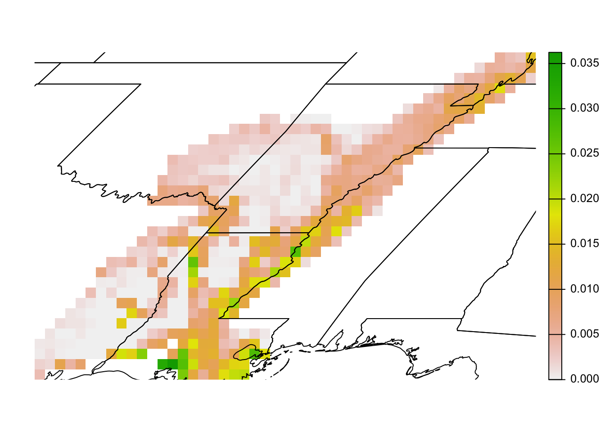

library(dplyr)
library(exactextractr)
library(ggplot2)
library(sf)
library(terra)
library(ebirdst)1 eBird Status Data Products
The eBird Status and Trends project uses full-annual cycle machine-learning models combining eBird observations with remote-sensing data, and accounting for variation in observer behavior and effort, to produce high resolution, weekly estimates of range boundaries, occurrence rate, and relative abundance of bird species. The latest version, with estimates for the year 2022, includes results for 1,113 species globally. Interactive visualizations for these species are available through the eBird Status and Trends website and the eBird Status Data Products are available through the R package ebirdst.
This lesson will introduce you to the eBird Status Data Products and the ebirdst R package developed specifically for working with these data. We will describe to the range of available data products, then demonstrate how to download these data products and load them into R for further analysis. Next we’ll work through a series of applications. Let’s start by loading the packages we’ll use throughout this lesson.
1.1 Data access
Access to the eBird Status Data Products is granted through an Access Request Form at: https://ebird.org/st/request. The terms of use have been desiged to be quite permissive in many cases, particularly academic and research use. After reading the eBird Status and Trends Data Products Terms of Use and filling out the Access Request Form you will be provided with an alphanumeric access key. To store the access key so it can be accessed by R and the ebirdst package, run the following (replacing "XXXXXXXXX" with your actual key):
set_ebirdst_access_key("XXXXXXXXX")This will save the access key as the environment variable EBIRDST_KEY in your .Renviron file so it’s accessible within your R session. You only need to do this once to store the key.
Checkpoint
To ensure your data access key is working, attempt run the following code, which will two small files. Speak to the instructor if this doesn’t work.
ebirdst_download_status("abetow",
pattern = "abundance_median_27km_2022",
force = TRUE)1.2 eBird Status species
The ebirdst_runs object is a data frame listing all the available species:
glimpse(ebirdst_runs)
#> Rows: 1,113
#> Columns: 28
#> $ species_code <chr> "abetow", "acafly", "acowoo", "affeag1"…
#> $ scientific_name <chr> "Melozone aberti", "Empidonax virescens…
#> $ common_name <chr> "Abert's Towhee", "Acadian Flycatcher",…
#> $ is_resident <lgl> TRUE, FALSE, TRUE, TRUE, FALSE, TRUE, F…
#> $ breeding_quality <chr> NA, "3", NA, NA, "3", NA, "1", "3", NA,…
#> $ breeding_start <date> NA, 2022-05-24, NA, NA, 2022-06-21, NA…
#> $ breeding_end <date> NA, 2022-08-02, NA, NA, 2022-07-12, NA…
#> $ nonbreeding_quality <chr> NA, "3", NA, NA, "1", NA, "1", "3", NA,…
#> $ nonbreeding_start <date> NA, 2022-12-06, NA, NA, 2022-11-15, NA…
#> $ nonbreeding_end <date> NA, 2022-02-15, NA, NA, 2022-03-29, NA…
#> $ postbreeding_migration_quality <chr> NA, "3", NA, NA, "3", NA, "1", "3", NA,…
#> $ postbreeding_migration_start <date> NA, 2022-08-09, NA, NA, 2022-07-19, NA…
#> $ postbreeding_migration_end <date> NA, 2022-11-29, NA, NA, 2022-11-08, NA…
#> $ prebreeding_migration_quality <chr> NA, "3", NA, NA, "3", NA, "2", "3", NA,…
#> $ prebreeding_migration_start <date> NA, 2022-02-22, NA, NA, 2022-04-05, NA…
#> $ prebreeding_migration_end <date> NA, 2022-05-17, NA, NA, 2022-06-14, NA…
#> $ resident_quality <chr> "3", NA, "3", "2", NA, "2", NA, NA, "3"…
#> $ resident_start <date> 2022-01-04, NA, 2022-01-04, 2022-01-04…
#> $ resident_end <date> 2022-12-27, NA, 2022-12-27, 2022-12-27…
#> $ has_trends <lgl> TRUE, TRUE, TRUE, FALSE, TRUE, TRUE, FA…
#> $ trends_season <chr> "resident", "breeding", "resident", NA,…
#> $ trends_region <chr> "north_america", "north_america", "nort…
#> $ trends_start_year <dbl> 2012, 2012, 2011, NA, 2012, 2015, NA, 2…
#> $ trends_end_year <dbl> 2022, 2022, 2021, NA, 2022, 2022, NA, 2…
#> $ trends_start_date <chr> "01-25", "05-24", "11-01", NA, "06-21",…
#> $ trends_end_date <chr> "05-10", "08-02", "05-03", NA, "07-12",…
#> $ rsquared <dbl> 0.923, 0.857, 0.881, NA, 0.787, 0.820, …
#> $ beta0 <dbl> -0.01392, 0.68942, -0.09267, NA, -0.162…If you’re working in RStudio, you can use View() to interactively explore this data frame. Note that several of the columns at the end of this data frame are related to trends, which we’ll cover in the next lesson.
1.2.1 Expert review
All species go through a process of expert human review prior to being released. The ebirdst_runs data frame also contains information from this review process. Reviewers assess each of the four seasons: breeding, non-breeding, pre-breeding migration, and post-breeding migration. Resident (i.e. non-migratory) species are identified by having TRUE in the is_resident column of ebirdst_runs, and these species are assessed across the whole year rather than seasonally. ebirdst_runs contains two important pieces of information for each season: a quality rating and seasonal dates.
The seasonal dates define the weeks that fall within each season; the relative abundance estimates for these weeks get averaged to produce the seasonal relative abundance maps on the Status and Trends website. Breeding and non-breeding season dates are defined for each species as the weeks during those seasons when the species’ population does not move. For this reason, these seasons are also described as stationary periods. Migration periods are defined as the periods of movement between the stationary non-breeding and breeding seasons. Note that for many species these migratory periods include not only movement from the breeding grounds to the non-breeding grounds, but also post-breeding dispersal, molt migration, and other movements.
Reviewers also examine the model estimates for each season to assess the amount of extrapolation or omission present in the model, and assign an associated quality rating ranging from 0 (lowest quality) to 3 (highest quality). Extrapolation refers to cases where the model predicts occurrence where the species is known to be absent, while omission refers to the model failing to predict occurrence where a species is known to be present.
A rating of 0 implies this season failed review and model results should not be used at all for this period. Ratings of 1-3 correspond to a gradient of more to less extrapolation and/or omission, and we often use a traffic light analogy when referring to them:
- Red light (1): low quality, extensive extrapolation and/or omission and noise, but at least some regions have estimates that are accurate; can be used with caution in certain regions.
- Yellow light (2): medium quality, some extrapolation and/or omission; use with caution.
- Green light (3): high quality, very little or no extrapolation and/or omission; these seasons can be safely used.
1.3 Downloading data
The function ebirdst_download_status() downloads eBird Status Data Products for a single species, it takes a species name (common name, scientific name, or species code) as its first argument. For example, to download the data for Blue-winged Teal use:
ebirdst_download_status("Blue-winged Teal")There are a wide variety of data products available for download via ebirdst_download_status(); however, the default behavior of this function is to only download the most commonly used data products: weekly and seasonal estimates of relative abundance. Consult the help for ebirdst_download_status() for details on downloading other data products, for example, range polygons or estimates of occurrence rate.
ebirdst uses a central location on your computer to download and store data. As a data user, the intention is for you to always access eBird Status and Trends Data Products through ebirdst rather than interacting with the data directly. You can see where the data are stored with ebirdst_data_dir() and you can change the default download directory by setting the environment variable EBIRDST_DATA_DIR, for example by calling usethis::edit_r_environ() and adding a line such as EBIRDST_DATA_DIR=/custom/download/directory/.
1.4 Loading data in R
In this workshop, we’ll focus on the raster data products, consisting of estimates on a regular grid of square cells. These can all be loaded into R using the ebirdst function load_raster(). In R, we’ll use the terra package to work with raster data. Raster data products fall into two broad categories providing weekly and seasonal estimates.
1.4.1 Weekly raster estimates
The core raster data products are the weekly estimates of occurrence, count, relative abundance, and proportion of population. All estimates are the median expected value for a 2 km, 1 hour eBird Traveling Count by an expert eBird observer at the optimal time of day and for optimal weather conditions to observe the given species.
- Occurrence: the expected probability of encountering a species.
- Count: the expected count of a species, conditional on its occurrence at the given location.
- Relative abundance: the expected relative abundance of a species, computed as the product of the probability of occurrence and the count conditional on occurrence. In addition to the median relative abundance, upper and lower confidence intervals (CIs) are provided, defined at the 10th and 90th quantile of relative abundance, respectively.
- Proportion of population: the proportion of the total relative abundance within each cell. This is a derived product calculated by dividing each cell value in the relative abundance raster by the sum of all cell values.
All predictions are made on a standard 3 km x 3 km global grid; however, for convenience lower resolution GeoTIFFs are also provided, which are typically much faster to work with. The three available resolutions are:
- High resolution (3km): the native 3 km resolution data
- Medium resolution (9km): data aggregated by a factor of 3 in each direction resulting in a resolution of 9 km
- Low resolution (27km): data aggregated by a factor of 9 in each direction resulting in a resolution of 27 km
The first argument to load_raster() is the species (common name, scientific name, or species code) and the remaining arguments specify which product to load. For example, we can load the relative abundance estimates with:
abd_median <- load_raster("buwtea", product = "abundance")
print(abd_median)
#> class : SpatRaster
#> dimensions : 5630, 13511, 52 (nrow, ncol, nlyr)
#> resolution : 2963, 2963 (x, y)
#> extent : -2e+07, 2e+07, -6673060, 1e+07 (xmin, xmax, ymin, ymax)
#> coord. ref. : +proj=sinu +lon_0=0 +x_0=0 +y_0=0 +R=6371007.181 +units=m +no_defs
#> source : buwtea_abundance_median_3km_2022.tif
#> names : 2022-01-04, 2022-01-11, 2022-01-18, 2022-01-25, 2022-02-01, 2022-02-08, ...
#> min values : 0, 0, 0, 0, 0, 0, ...
#> max values : 691, 961, 694, 1029, 930, 876, ...
Checkpoint
Take a moment to explore the output of print(abd_median) to see what information is provided about the raster. You should be able to identify the number of layers (52), the resolution (2962 meters), and coordinate reference system (a sinusoidal equal area projection).
We often refer to these raster objects as “weekly cubes” (e.g. the “weekly abundance cube”). Notice that the cubes contains 52 layers, corresponding to the weeks of the year. The layer names are the dates associated with the mid-point of each week.
as.Date(names(abd_median))
#> [1] "2022-01-04" "2022-01-11" "2022-01-18" "2022-01-25" "2022-02-01"
#> [6] "2022-02-08" "2022-02-15" "2022-02-22" "2022-03-01" "2022-03-08"
#> [11] "2022-03-15" "2022-03-22" "2022-03-29" "2022-04-05" "2022-04-12"
#> [16] "2022-04-19" "2022-04-26" "2022-05-03" "2022-05-10" "2022-05-17"
#> [21] "2022-05-24" "2022-05-31" "2022-06-07" "2022-06-14" "2022-06-21"
#> [26] "2022-06-28" "2022-07-05" "2022-07-12" "2022-07-19" "2022-07-26"
#> [31] "2022-08-02" "2022-08-09" "2022-08-16" "2022-08-23" "2022-08-30"
#> [36] "2022-09-06" "2022-09-13" "2022-09-20" "2022-09-27" "2022-10-04"
#> [41] "2022-10-11" "2022-10-18" "2022-10-25" "2022-11-01" "2022-11-08"
#> [46] "2022-11-15" "2022-11-22" "2022-11-29" "2022-12-06" "2022-12-13"
#> [51] "2022-12-20" "2022-12-27"To load the upper and lower confidence intervals for relative abundance, we can use the metric argument.
abd_lower <- load_raster("buwtea", product = "abundance", metric = "lower")
abd_upper <- load_raster("buwtea", product = "abundance", metric = "upper")1.4.2 Seasonal raster estimates
The seasonal raster estimates are provided for the same set of products and at the same three resolutions as the weekly estimates. They’re derived from the weekly data by taking the cell-wise mean or max across the weeks within each season. Recall that the seasonal boundary dates are available in the data frame ebirdst_runs. Data are not provided for seasons with a quality score of 0.
The seasonal data products can be loaded with load_raster(period = "seasonal") and the metric argument set to either "mean" or "max". For example, to load the mean seasonal relative abundance, use
abd_seasonal_mean <- load_raster("buwtea",
product = "abundance",
period = "seasonal",
metric = "mean")
print(abd_seasonal_mean)
#> class : SpatRaster
#> dimensions : 5630, 13511, 4 (nrow, ncol, nlyr)
#> resolution : 2963, 2963 (x, y)
#> extent : -2e+07, 2e+07, -6673060, 1e+07 (xmin, xmax, ymin, ymax)
#> coord. ref. : +proj=sinu +lon_0=0 +x_0=0 +y_0=0 +R=6371007.181 +units=m +no_defs
#> source : buwtea_abundance_seasonal_mean_3km_2022.tif
#> names : breeding, nonbreeding, prebree~gration, postbre~gration
#> min values : 0.0, 0, 0, 0
#> max values : 23.8, 572, 165, 435Notice there are four layers in this raster corresponding to the four seasons.
names(abd_seasonal_mean)
#> [1] "breeding" "nonbreeding" "prebreeding_migration"
#> [4] "postbreeding_migration"Finally, as a convenience, the data products include year-round rasters summarizing the mean or max across all weeks that fall within a season that passed the expert review process. These can be accessed similarly to the seasonal products, just with period = "full-year" instead. For example, these layers can be used in conservation planning to assess the most important sites across the full range and full annual cycle of a species.
abd_fy_max <- load_raster("buwtea",
product = "abundance",
period = "full-year",
metric = "max")1.5 Working with raster data
Let’s load the weekly and seasonal relative abundance cubes and use them to demonstrate some basic raster operations with the data. We’ll use the 9 km estimates for demonstration since they’re faster to process, but in practice you may want to use the 3 km resolution data for increased precision.
abd_weekly <- load_raster("buwtea", product = "abundance", resolution = "9km")
abd_seasonal <- load_raster("buwtea", product = "abundance",
period = "seasonal", resolution = "9km")These cubes can easily be subset to a single week or season.
# week of may 17
abd_weekly[["2022-05-17"]]
#> class : SpatRaster
#> dimensions : 1877, 4504, 1 (nrow, ncol, nlyr)
#> resolution : 8888, 8888 (x, y)
#> extent : -2e+07, 2e+07, -6676023, 1e+07 (xmin, xmax, ymin, ymax)
#> coord. ref. : +proj=sinu +lon_0=0 +x_0=0 +y_0=0 +R=6371007.181 +units=m +no_defs
#> source : buwtea_abundance_median_9km_2022.tif
#> name : 2022-05-17
#> min value : 0.0
#> max value : 12.7
# breeding season
abd_seasonal[["breeding"]]
#> class : SpatRaster
#> dimensions : 1877, 4504, 1 (nrow, ncol, nlyr)
#> resolution : 8888, 8888 (x, y)
#> extent : -2e+07, 2e+07, -6676023, 1e+07 (xmin, xmax, ymin, ymax)
#> coord. ref. : +proj=sinu +lon_0=0 +x_0=0 +y_0=0 +R=6371007.181 +units=m +no_defs
#> source : buwtea_abundance_seasonal_mean_9km_2022.tif
#> name : breeding
#> min value : 0.0
#> max value : 10.6We can also subset the weekly cube to a range of weeks. For example, let’s subset to only the estimates for weeks in May, then take the average across the weeks.
# determine which dates we want to include
week_dates <- as.Date(names(abd_weekly))
start_date <- as.Date("2022-05-01")
end_date <- as.Date("2022-05-31")
week_in_may <- week_dates >= start_date & week_dates <= end_date
# subset to weeks in may
abd_weekly_may <- abd_weekly[[week_in_may]]
# average across weeks
mean(abd_weekly_may, na.rm = TRUE)
#> class : SpatRaster
#> dimensions : 1877, 4504, 1 (nrow, ncol, nlyr)
#> resolution : 8888, 8888 (x, y)
#> extent : -2e+07, 2e+07, -6676023, 1e+07 (xmin, xmax, ymin, ymax)
#> coord. ref. : +proj=sinu +lon_0=0 +x_0=0 +y_0=0 +R=6371007.181 +units=m +no_defs
#> source(s) : memory
#> name : mean
#> min value : 0.0
#> max value : 20.5Making a simple map of the data will produce unexpected results. For example, let’s map the non-breeding season relative abundance for Blue-winged Teal.
plot(abd_seasonal[["nonbreeding"]])All eBird Status Data Products are provided for the entire globe in an esoteric Sinusoidal equal area projection designed for analysis but not mapping. Also, notice that some areas, such as the Amazon Basin and High Arctic, have missing values (white in the map) indicating that there was insufficient data to make a prediction in the region. Other areas, such as Central America and Western Europe, have sufficient data to predict that the species is absent (light grey on the map). To produce a more useful map, we can crop and mask the data to a region of interest. For example, let’s spatially subset the non-breeding season relative abundance raster for Blue-winged Teal data to the footprint of the Lower Mississippi Valley Joint Venture (LMVJV).
# polygon for the lower mississippi valley joint venture footprint
lmv_boundary <- paste0("https://github.com/ebird/ebirdst-workshop_tws-2023/",
"raw/main/data/boundaries.gpkg") %>%
read_sf(layer = "lmvjv") %>%
st_transform(crs = st_crs(abd_seasonal))
# state boundary polygons for mapping
states <- paste0("https://github.com/ebird/ebirdst-workshop_tws-2023/",
"raw/main/data/boundaries.gpkg") %>%
read_sf(layer = "states") %>%
st_transform(crs = st_crs(abd_seasonal))
# crop and mask the breeding season relative abundance raster
abd_breeding_lmv <- crop(abd_seasonal[["nonbreeding"]], lmv_boundary) %>%
mask(lmv_boundary)
# map
plot(abd_breeding_lmv, axes = FALSE)
plot(st_geometry(states), add = TRUE)
Checkpoint
Let’s take a break before moving on to some more realistic applications of the eBird Status Data Products. Make sure you’re comfortable loading the data into R and performing some of the basic operations.
1.6 Applications
The remainder of the workshop will work through two example applications using the eBird Status Data Products:
- Trajectories: chart the change in the percent of the population in a region throughout the year for a set of species.
- Prioritization: use eBird Status Data Products to identify important sites for a set of species.
1.6.1 Trajectories
In this application, we’ll look at the change in populations for two species over the course of the year in the LMVJV. We’ll consider Blue-winged Teal and Canvasback, two migrant species that winter in the region. When comparing multiple species, or a single species between different seasons, it’s important to use the proportion of population rather than relative abundance to mitigate the impact of differences in detectability between seasons and species.
Let’s start by downloading data for Canvasback (recall we already downloaded the Blue-winged Teal data) and loading the weekly proportion of population cubes for both species. For the remainder of this workshop, we’ll work with the 27 km resolution data to ensure we can download and process data quickly. Below we use pattern = "_27km_" to instruct ebirdst_download_status() to only download the 27 km estimates. In real-world applications, you will likely want to use the full 3 km resolution data for higher precision.
# download data
ebirdst_download_status("Canvasback", pattern = "_27km_")
# proportion of population cubes
pop_buwtea <- load_raster("buwtea",
product = "proportion-population",
resolution = "9km")
pop_canvas <- load_raster("canvas",
product = "proportion-population",
resolution = "9km")Now, we’ll use the R package exactextractr to calculate the sum of the proportions for each species within the LMVJV.
# calculate total proportion of population within lmvjv
# blue-winged teal
traj_buwtea <- exact_extract(pop_buwtea, lmv_boundary, fun = "sum")
traj_buwtea <- data.frame(species = "Blue-winged Teal",
week = as.Date(names(pop_buwtea)),
prop_pop = as.numeric(traj_buwtea[1, ]))
# canvasback
traj_canvas <- exact_extract(pop_canvas, lmv_boundary, fun = "sum")
traj_canvas <- data.frame(species = "Canvasback",
week = as.Date(names(pop_canvas)),
prop_pop = as.numeric(traj_canvas[1, ]))
# combine
trajectories <- bind_rows(traj_buwtea, traj_canvas)
head(trajectories)
#> species week prop_pop
#> 1 Blue-winged Teal 2022-01-04 0.00622
#> 2 Blue-winged Teal 2022-01-11 0.00885
#> 3 Blue-winged Teal 2022-01-18 0.00925
#> 4 Blue-winged Teal 2022-01-25 0.01097
#> 5 Blue-winged Teal 2022-02-01 0.01298
#> 6 Blue-winged Teal 2022-02-08 0.01600Finally we can plot the trajectories.
ggplot(trajectories, aes(x = week, y = prop_pop, color = species)) +
geom_line() +
scale_y_continuous(labels = scales::percent) +
labs(x = "Week",
y = "% of population",
title = "Weekly % of population trajectory in LMVJV",
color = NULL) +
theme(legend.position = "bottom")1.6.2 Prioritization
For the next application, we’ll perform a multi-species site prioritization exercise, identifying important non-breeding sites for a set of four species in the LMVJV: Blue-winged Teal, Canvasback, Mallard, and Virginia Rail. Let’s start by downloading data for species that require it, loading the seasonal proportion of population rasters, cropping to the LMVJV, and combining the rasters across species.
Tip
Relative abundance estimates are impacted by detection rates, which can vary between species. As a results, when comparing eBird Status and Trends data across species, it’s critical to always use the percent of population layers, which have been standardized by dividing each cell value by the total relative abundance across all cells.
species_list <- c("buwtea", "canvas", "mallard", "virrai")
proportion_population <- list()
for (species in species_list) {
# download data where needed, existing files won't be re-downloaded
ebirdst_download_status(species, pattern = "_27km_")
# load seasonal proportion of population
pop_seasonal <- load_raster(species, "proportion-population",
period = "seasonal",
resolution = "27km")
# subset to the nonbreeding season, crop and mask to lmvjv
pop_breeding <- pop_seasonal[["nonbreeding"]] %>%
crop(lmv_boundary) %>%
mask(lmv_boundary)
# combine with other species
proportion_population[[species]] <- pop_breeding
}
# stack the rasters into a single object
proportion_population <- rast(proportion_population)
print(proportion_population)
#> class : SpatRaster
#> dimensions : 32, 49, 4 (nrow, ncol, nlyr)
#> resolution : 26665, 26665 (x, y)
#> extent : -9215679, -7909081, 3287904, 4141193 (xmin, xmax, ymin, ymax)
#> coord. ref. : +proj=sinu +lon_0=0 +x_0=0 +y_0=0 +R=6371007.181 +units=m +no_defs
#> source(s) : memory
#> varnames : buwtea_proportion-population_seasonal_mean_27km_2022
#> canvas_proportion-population_seasonal_mean_27km_2022
#> mallar3_proportion-population_seasonal_mean_27km_2022
#> ...
#> names : buwtea, canvas, mallard, virrai
#> min values : 0.000000, 0.00000, 0.000000, 0.00000
#> max values : 0.000834, 0.00276, 0.000502, 0.00491The goal of this exercise is to simultaneously prioritize sites across all four species. To do this, we calculate the cell-wise mean proportion of population across the species, which results in a single layer that acts as a proxy for importance.
# importance: mean percent of population across species
importance <- mean(proportion_population, na.rm = TRUE)
# plot the square root of importance since the data are right skewed
par(mar = c(0.25, 0.25, 0.25, 0.25))
plot(sqrt(importance), axes = FALSE)
plot(st_geometry(states), add = TRUE)
The absolute numbers in this map are challenging to interpret (they’re the mean proportion of the population across the four species in each cell). Instead, the values should be interpreted in relative terms, giving the relative importance of each cell for this set of four species.
For the sake of this example, let’s identify the top 10% of grid cells within the LMVJV for these four species.
# identify the 90th quantile of importance
q90 <- global(importance, fun = quantile, probs = 0.9, na.rm = TRUE) %>%
as.numeric()
# reclassify the importance raster to highlight the top cells
top_cells <- as.numeric(importance >= q90)Finally, let’s make a basic map showing the selected sites in green.
par(mar = c(0.25, 0.25, 0.25, 0.25))
plot(top_cells, axes = FALSE, legend = FALSE)
plot(st_geometry(states), add = TRUE)